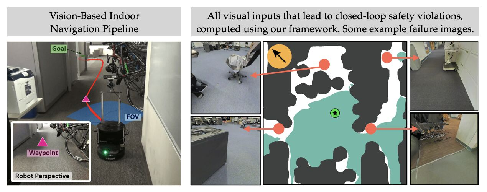
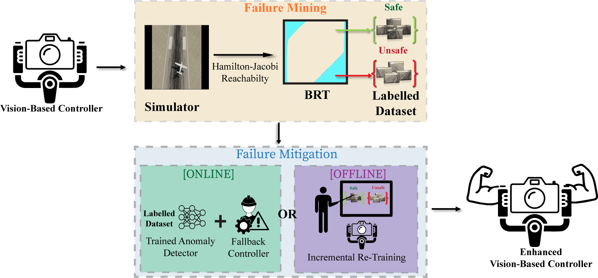

← Back to research themes
Improve Over Time
Failure analysis, near-miss learning, and safety feedback loops
Safety is not a one-time property established before deployment. Failures, near-misses, and runtime interventions provide valuable signals about where an autonomous system is brittle. In this theme, we study how deployment experience can be used to diagnose weaknesses, update safety models, improve policies and simulators, and reduce future interventions.
Representative Projects

Discovering Closed-Loop Failures of Vision-Based Controllers
Vision-based controllers can fail in surprising closed-loop scenarios even when their perception outputs appear plausible. This work formulates failure discovery as an optimal control problem, enabling targeted search for simulator states and visual inputs that trigger system-level failures.

Unsupervised Discovery of Failure Taxonomies from Deployment Logs
Large collections of robot failure logs are hard to analyze manually. This work uses vision-language reasoning to produce structured failure explanations, then clusters those explanations to discover recurring, interpretable failure modes that can guide targeted data collection, policy refinement, and runtime monitoring.

Enhancing Safety and Robustness of Vision-Based Controllers via Failure Mining and Targeted Retraining
Neural reachable tubes are used to stress-test vision-based controllers and mine closed-loop failure modes. The discovered failures then support both runtime failure monitoring and targeted retraining, improving robustness to known failure modes.